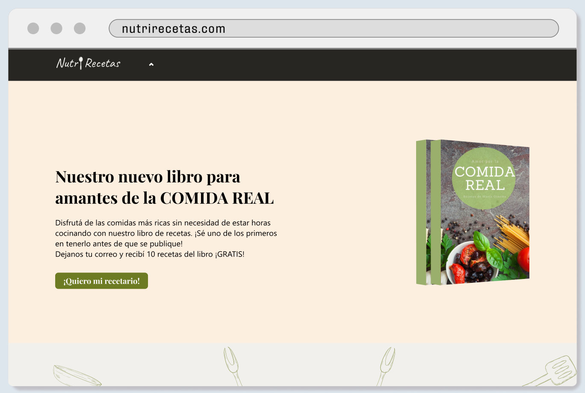
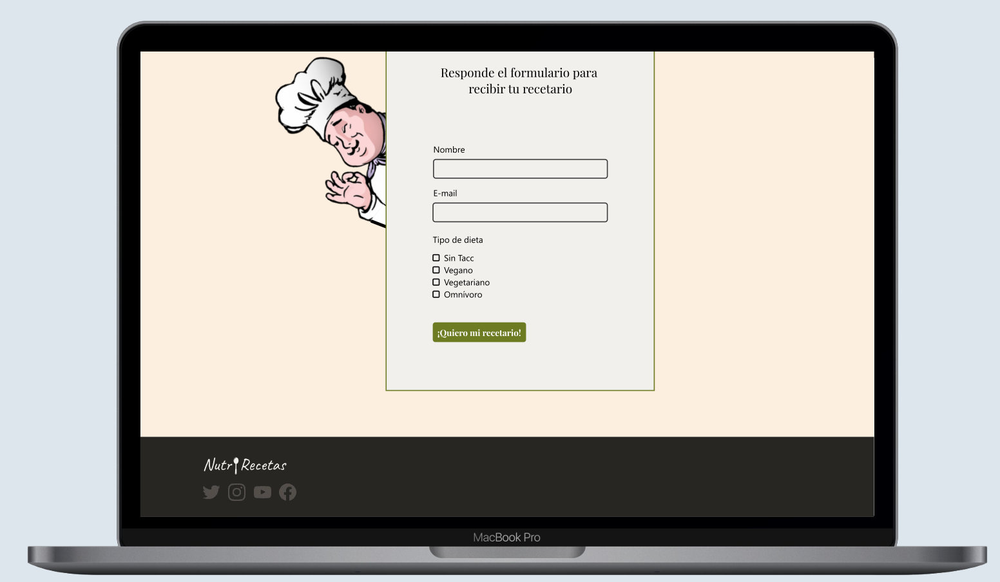

Landing page · Proyecto individual
Nutri Recetas
Landing page para una marca de cocina inventada desde cero, como ejercicio de cátedra. El objetivo: que la persona deje su mail a cambio de 10 recetas gratis del libro Comida Real.
Ficha del proyecto
- Proyecto
- Nutri Recetas
- Contexto
- Taller de Diseño Multimedial 3 · UNLP · 2024
- Equipo
- Individual
Tipo:AppWebJuego
Hice:IdentidadUIDesarrollo
Decisiones
- Conversión: el botón "¡Quiero mi recetario!" aparece en la portada y se repite en el formulario final, que pide solo nombre, mail y tipo de dieta.
- Identidad: paleta de 3 colores (2 principales y 1 de acento) para marcar la jerarquía entre secciones y destacar los llamados a la acción.
- Tipografía: sans-serif para el cuerpo de texto y serif para títulos y botones.

